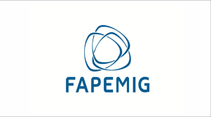
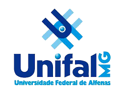

<section class="support-section section-shell" aria-labelledby="support-title">
  <div class="container">
    <div class="support-card">
      <div class="section-heading center">
        <span class="eyebrow">Apoio institucional</span>
        <h2 id="support-title">Este projeto conta com o apoio de Grandes Instituições</h2>
        <p>Reafirmando nosso compromisso com inovação e qualidade no cuidado em saúde</p>
      </div>

      <div class="support-metrics" aria-label="Indicadores institucionais do SISAPEC">
        <article class="support-metric">
          <strong>20</strong>
          <span>Unidades ESF em implantação (Alfenas/MG)</span>
        </article>
        <article class="support-metric">
          <strong>200+</strong>
          <span>Unidades atendidas (projeção 2026)</span>
        </article>
        <article class="support-metric">
          <strong>+32 mil</strong>
          <span>Diagnósticos de enfermagem registrados (projeção 12 meses)</span>
        </article>
      </div>

      <div class="funding-logos" aria-label="Órgãos de fomento e instituições apoiadoras">
        <figure>
          
        </figure>
        <figure>
          
        </figure>
        <figure>
          
        </figure>
        <figure>
          
        </figure>
      </div>
    </div>
  </div>
</section>
